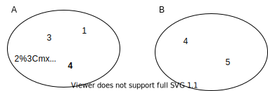
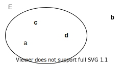
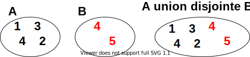
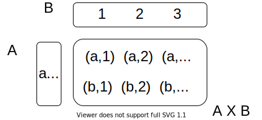

Ensemble vide
On note ∅ l'ensemble vide, qui ne contient aucun élément.
Eléments, Cardinal
Un ensemble peut contenir un nombre fini d'éléments ou une infinité.  On utilise les accolades pour représenter un ensemble :A = { 1, 2, 3, 4 } ; B = { 4, 5 }
L'ensemble vide peut donc s'écrire aussi : ∅ = { }
On appelle Cardinal le nombre d'éléments dans un ensemble.
On note card(E) le nombre d'élément d'un ensemble E.
card( A ) = 4 ; card( B ) = 2
On a : card( ∅ ) = 0
Appartenance
Un élément peut appartenir ou pas à un ensemble :La relation d'appartenance entre un élément et un ensemble est notée
∈

« a appartient à E » s'écrit : a ∈ E « b n'appartient pas à E » s'écrit : b ∉ E
Union, intersection

L'union de deux ensembles est notée
A ∪ B
L'intersection de deux ensembles est notée
A ∩ BA ∪ B = { 1, 2, 3, 4, 5 }
A ∩ B = { 4 }
ET, OU logiques
Avec les notions très naturelles et intuitives d'union et d'intersection, on peut par exemple exprimer le ET et le OU logiques :-
Le ET correspond à l'intersection. A ET B est noté A ⋀ B
e ∈ A ∩ B ⇔ e ∈ A ⋀ e ∈ BUn élément e appartient à A inter B si, et seulement si, e appartient à A ET e appartient à B.
-
Le OU correspond à l'union. A OU B est noté A ⋁ B
e ∈ A ∪ B ⇔ e ∈ A ⋁ e ∈ BUn élément e appartient à A union B si, et seulement si, e appartient à A OU e appartient à B.
Somme ou Union disjointe

La somme, ou union disjointe de deux ensembles : ensemble qui contient tous les éléments de A et tous les éléments de B.
L'union disjointe de deux ensembles est notée
A ⊔ BContrairement à l'union "normale", si un élément appartient à A et à B, il est compté 2 fois.
On a la propriété :
card(A ⊔ B) = card(A) + card(B)
Produit

On appelle Produit cartésien de deux ensembles A et B, un ensemble dont les éléments sont des paires formées d'un élément de A et d'un élément de B.
Le produit de deux ensembles est noté
A X BA X B = { (a, 1), (a, 2), (a, 3), (b, 1), (b, 2), (b, 3) }
On a la propriété :
card(A X B) = card(A) x card(B)
Autres notions
D'autres notions importantes existent, mais ne sont pas abordées dans cette introduction. On peut citer- La différence, la différence symétrique
- La notion de sous-ensemble, et l'ensemble des parties d'un ensemble